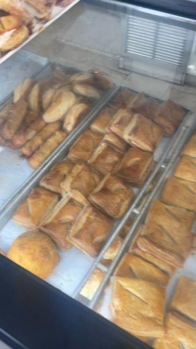
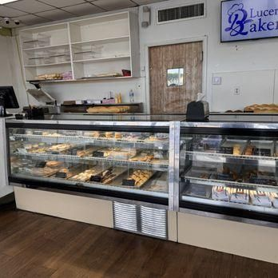
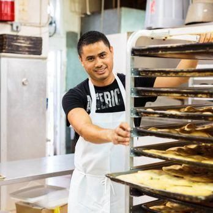

Coral Way has smelled like butter & coffee for forty years.Coral Way huele a mantequilla y café desde hace cuarenta años.
For four decades, Lucerne Bakery has been a Miami institution, a corner of Coral Way where ovens fire up before dawn and where the morning rush is measured in cafecito orders, not minutes. The same families who grew up on our pastelitos now bring their grandkids in for a guayaba con queso and a colada to share.Durante cuatro décadas, Lucerne Bakery ha sido una institución de Miami, una esquina de Coral Way donde los hornos se encienden antes del amanecer y donde la hora pico se mide en órdenes de cafecito, no en minutos. Las mismas familias que crecieron con nuestros pastelitos hoy traen a sus nietos por un guayaba con queso y una colada para compartir.
We are a bakery first. Cuban bread comes out long, golden, and hot enough to fog up the bag. Croquetas are fried to order. The pan con bistec is pressed thin on the plancha, lime squeezed at the last moment. There’s nothing precious about it, just the everyday Miami food that has earned its place at hundreds of thousands of tables.Ante todo somos una panadería. El pan cubano sale largo, dorado y tan caliente que empaña la bolsa. Las croquetas se fríen al momento. El pan con bistec se prensa fino en la plancha, con limón exprimido al final. No tiene nada de pretencioso: es la comida de todos los días en Miami, la que se ha ganado su lugar en cientos de miles de mesas.
If you’ve never been: come hungry, come early, come ready to order in any combination of English and Spanish. We’ll meet you where you are. That’s how it’s been for forty years, and that’s how we plan on keeping it.Si nunca has venido: ven con hambre, ven temprano y pide en inglés, en español o en una mezcla de los dos. Te atendemos como sea. Así ha sido por cuarenta años, y así pensamos seguir.



One family, three generationsUna familia, tres generaciones
Started on Coral Way in 1985, still run by the Romero family.Fundada en Coral Way en 1985 y todavía en manos de la familia Romero.
Jorge Romero
Founded Lucerne Bakery on Coral Way.Fundó Lucerne Bakery en Coral Way.
Jorge Romero
His son, running the bakery.Su hijo, al frente de la panadería.
Ricky Romero
His grandson, running it alongside his father.Su nieto, al frente junto a su padre.